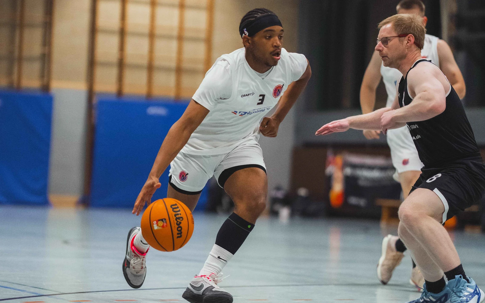

So macht Heimspielbasketball Spaß: An zwei Tagen standen fünf Partien unserer Mannschaften auf dem Programm – und alle fünf endeten mit einem NBC-Sieg. Besonders beim Auftritt der Regionalliga-Herren war die Tribüne in der Sporthalle der Ludwig-Povel-Schule voll besetzt. Die Unterstützung von den Rängen sorgte für eine starke Atmosphäre.
107:51 gegen Damme und ein erfreuliches Comeback
Unsere 1. Herren gewann gegen die Gäste aus Damme mit 107:51 und feierte damit den vierten Saisonsieg im fünften Spiel. Für Niklas Kraffzig war es zugleich ein besonderer Moment: Nach seiner Verletzung und einigen Wochen zurück im Training stand er erstmals für den neuen Verein auf dem Feld.
Trainer Patrick Olliges freute sich über eine starke Teamleistung. „Die junge Mannschaft wächst immer mehr zusammen und entwickelt sich kontinuierlich weiter“, lautete sein Fazit.
Auch Damen, 2. Herren und Jugend erfolgreich
Nach den Männern legten auch unsere Basketballerinnen nach: Gegen die dritte Mannschaft des BBC Osnabrück gab es in der Regionsliga ein deutliches 95:16. Weitere Siege holten die 2. Herren sowie die U12 und die U14.
- 1. Herren: 107:51 gegen Damme
- Damen: 95:16 gegen BBC Osnabrück III
- 2. Herren: 86:44 gegen VfL Löningen IV
- U12: 91:71 gegen Rasta Vechta
- U14: 69:60 gegen TV Meppen
Die 2. Herren führte nach ihrem Erfolg die Kreisklasse an. Das ebenfalls angesetzte Heimspiel der U18 fiel kurzfristig aus.
Gemeinschaft, die auch neben dem Feld trägt
In unserer ersten eigenständigen Saison als NBC Baskets entwickelt sich nicht nur das sportliche Zusammenspiel. Eltern und weitere Helferinnen und Helfer engagieren sich auch abseits des Spielfelds und tragen zum Vereinsleben bei. An diesem Wochenende schufen sie eine vorweihnachtliche Atmosphäre in der Halle und machten den großen Heimspieltag mit möglich.
Danke an alle Fans, Eltern und Helfenden, die unsere Teams unterstützen und Basketball in Nordhorn zu einem gemeinsamen Erlebnis machen!
Bericht: Holger Wilkens (Grafschafter Nachrichten vom 25.11.2026). Für die Vereinswebsite redaktionell aufbereitet von den NBC Baskets Nordhorn. Onlinefassung: „Neuer Verein auf dem Höhenflug: Volle Halle, viele Siege“. Das hier verwendete Spielfoto wurde separat zur Verfügung gestellt.
Artikel teilen
Für Instagram: Artikel-Link kopieren und z. B. als Link-Sticker in einer Story einfügen.